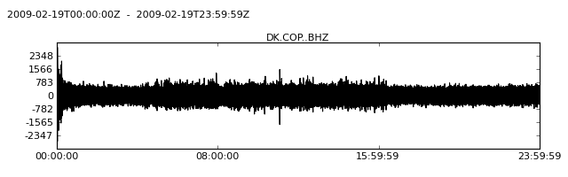
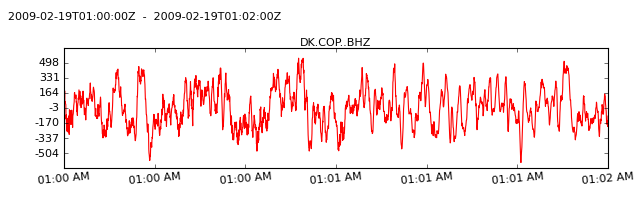
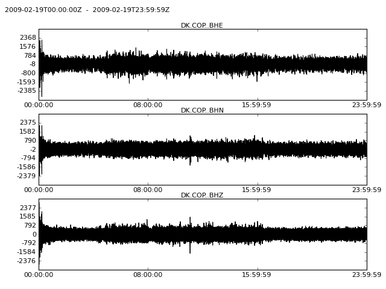
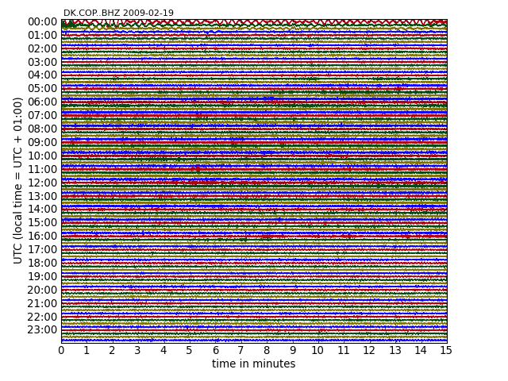

Read the files as shown at the Reading Seismograms page. We will use two different ObsPy Stream objects throughout this tutorial. The first one, singlechannel, just contains one continuous Trace and the other one, threechannel, contains three channels of a seismograph.
>>> from obspy.core import read
>>> singlechannel = read('http://examples.obspy.org/COP.BHZ.DK.2009.050')
>>> print singlechannel
1 Trace(s) in Stream:
DK.COP..BHZ | 2009-02-19T00:00:00.025100Z - 2009-02-19T23:59:59.975100Z | 20.0 Hz, 1728000 samples
>>> threechannels = read('http://examples.obspy.org/COP.BHE.DK.2009.050')
>>> threechannels += read('http://examples.obspy.org/COP.BHN.DK.2009.050')
>>> threechannels += read('http://examples.obspy.org/COP.BHZ.DK.2009.050')
>>> print threechannels
3 Trace(s) in Stream:
DK.COP..BHE | 2009-02-19T00:00:00.035100Z - 2009-02-19T23:59:59.985100Z | 20.0 Hz, 1728000 samples
DK.COP..BHN | 2009-02-19T00:00:00.025100Z - 2009-02-19T23:59:59.975100Z | 20.0 Hz, 1728000 samples
DK.COP..BHZ | 2009-02-19T00:00:00.025100Z - 2009-02-19T23:59:59.975100Z | 20.0 Hz, 1728000 samples
Using the plot() method of the Stream objects will show the plot. The default size of the plots is 800x250 pixel. Use the size attribute to adjust it to your needs.
>>> singlechannel.plot()
[source code, hires.png, pdf]

This example shows the options to adjust the color of the graph, the number of ticks shown, their format and rotation and how to set the start- and endtime of the plot. Please see the documentation of method plot() for more details on all parameters.
>>> dt = singlechannel[0].stats.starttime
>>> singlechannel.plot(color='red', number_of_ticks=7,
... tick_rotation=5, tick_format='%I:%M %p',
... starttime=dt + 60*60, endtime=dt + 60*60 + 120)
[source code, hires.png, pdf]

Plots may be saved into the file system by the outfile parameter. The format is determined automatically from the filename. Supported file formats depend on your matplotlib backend. Most backends support png, pdf, ps, eps and svg.
>>> singlechannel.plot(outfile='singlechannel.png')
If the Stream object contains more than one Trace, each Trace will be plotted in a subplot. The start- and endtime of each trace will be the same and the range on the y-axis will also be identical on each trace. Each additional subplot will add 250 pixel to the height of the resulting plot. The size attribute is used in the following example to change the overall size of the plot.
>>> threechannels.plot(size=(800, 600))
[source code, hires.png, pdf]

A day plot of a Trace object may be plotted by setting the type parameter to 'dayplot':
>>> singlechannel.plot(type='dayplot')
[source code, hires.png, pdf]
